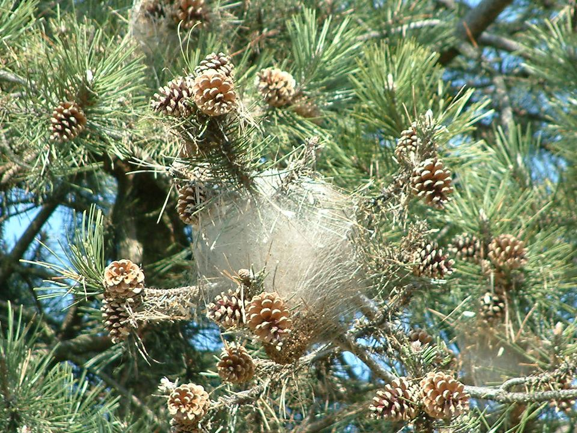

Chenilles processionnaires : agir avant la descente
Leurs poils urticants sont dangereux pour les enfants, les chiens et les chats. Les nids d'hiver sont bien visibles dans les pins : c'est le bon moment pour intervenir.
Mis à jour le · par Mathias Sergent, technicien certifié
- Technicien certifié Certibiocide
- Particuliers et professionnels
- Tout le département 13

Ce qui se passe au fil de l'année
Le calendrier varie selon l'altitude et l'exposition, mais en Provence les processions peuvent commencer dès la fin de l'hiver.
| Période | Ce qui se passe | Ce qu'on peut faire |
|---|---|---|
| Été | Les papillons pondent dans les aiguilles des pins | Pièges à phéromones pour capturer les papillons mâles |
| Automne | Les jeunes chenilles tissent leurs nids | Traitement des chenilles dans l'arbre selon la situation |
| Hiver | Les nids blancs sont bien visibles en bout de branche | Retrait des nids accessibles à l'échenilloir |
| Fin d'hiver, printemps | Les chenilles descendent en procession pour s'enterrer | Écopièges posés autour du tronc |
Pourquoi s'en occuper
Chaque chenille porte des milliers de poils microscopiques qui se détachent facilement et provoquent démangeaisons, irritations des yeux et des voies respiratoires.
Les chiens sont particulièrement exposés en reniflant une procession : un contact avec la langue nécessite d'aller rapidement chez le vétérinaire.
Les poils restent urticants même dans les nids vides et au sol.
Ce qu'il ne faut pas faire
- Ne jamais toucher une procession ni un nid à mains nues.
- Ne pas couper une branche avec un nid sans protection : les poils se dispersent.
- Tenir les chiens en laisse sous les pins en fin d'hiver.
- En cas de réaction importante, consultez un médecin ou appelez le 15.
Comment on intervient
- Inspection des arbres
Comptage et repérage des nids, sur les pins et parfois les cèdres.
- Retrait des nids
Les nids accessibles sont coupés à l'échenilloir avec une tenue de protection, puis éliminés.
- Écopièges
Une collerette autour du tronc capture les chenilles quand elles descendent.
- Prévention
Pièges à phéromones en été pour réduire les pontes de l'année suivante.
Traitement des chenilles processionnaires dans les Bouches-du-Rhône
Nous intervenons à Marseille (16 arrondissements), dans le Pays d'Aix et autour d'Aubagne, depuis notre base de Trets. Nous passons aussi régulièrement à Gardanne et à Gémenos.
Le rendez-vous est fixé à l'appel, du lundi au samedi de 8 h à 19 h. Décrivez ce que vous voyez, ou envoyez une photo : cela nous aide à venir avec le bon matériel.
Quand agir contre les chenilles processionnaires ?
| Signe | Ce que ça indique | Que faire |
|---|---|---|
| Nids blancs soyeux en bout de branches (automne) | Nids d'hiver installés | Retrait des nids accessibles |
| Chenilles en file sur le sol (fin d'hiver) | Descente des processions | Ne pas toucher, éloigner enfants et animaux |
| Démangeaisons après une promenade sous les pins | Poils urticants | Consulter un médecin ou un pharmacien |
| Pins affaiblis, aiguilles mangées | Infestation répétée | Écopièges sur les troncs |
Par exemple, un chien qui renifle une procession peut avoir la langue gravement touchée : c'est une urgence vétérinaire. En pratique, l'automne et l'hiver sont le bon moment pour retirer les nids, avant la descente des chenilles. Concrètement, un écopiège posé sur le tronc capture les chenilles qui descendent. Exemple courant : des processions qui traversent une cour d'école ou une aire de jeux sous les pins.
Chenilles processionnaires : vos questions
Quand faut-il intervenir ?
Idéalement en automne et en hiver, quand les nids sont visibles et avant la descente des processions.
Brûler le nid est-il une bonne idée ?
Non : c'est dangereux pour l'arbre et pour vous, et les poils urticants se dispersent avec la chaleur.
Les écopièges suffisent-ils ?
Ils capturent les chenilles des nids qu'on ne peut pas atteindre. Ils sont plus efficaces combinés au retrait des nids accessibles.
Les poils restent-ils dangereux après le départ des chenilles ?
Oui, les poils urticants restent actifs longtemps dans les nids et au sol. Ne manipulez pas les nids sans protection.
Faut-il couper le pin ?
Rarement : retirer les nids et poser des écopièges suffit le plus souvent. L'arbre se refait une santé quand l'infestation diminue.